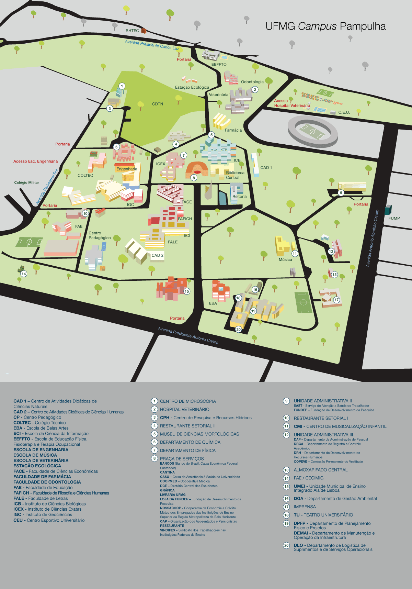

FUMP(Fundação Universitária Mendes Pimentel)
A Fundação Universitária Mendes Pimentel (FUMP) é uma instituição controlada pela UFMG e tem como missão prestar assistência estudantil aos alunos da Universidade. Os benefícios e auxílios oferecidos pela Fump são para os estudantes de graduação de cursos presenciais da UFMG, que estejam matriculados, frequentes e que necessitem de algum apoio para se manter na Universidade. As assistências cedidas pela Fump são:
-> Alimentação
-> Moradia universitária
-> Assistência à saúde
-> Auxílio financeiro
-> Acesso à informação digital
-> Bolsas/estágios
-> Acesso ao material acadêmico
-> Bolsa permanência
Como ter acesso aos benefícios da Fump?
Para ter acesso aos benefícios é necessário preencher um Questionário Socioeconômico, disponível em:
http://sinae.fump.ufmg.br/sinaeWeb/login.jsf
Após responder o questionário, o aluno deve reunir alguns documentos específicos e levá-los à Fundação, para passar por um análise, triagem e, posteriormente uma entrevista com os assistentes da Fump. Para mais informações acesse o site da Fump:
RUs(Restaurantes Universitários)
A Fump - Fundação Universitária Mendes Pimentel, fornece diversos tipos de assistência aos alunos da UFMG e tem em funcionamento o Programa de Alimentação. Esse programa tem como missão oferecer refeições de qualidade, com cardápio variado e balanceado para a comunidade interna e externa à Universidade. Para isso existem os Restaurantes Univeritários - RUs - refeitórios que trabalham com o sistema de bandejão. Ao todo, a Fump administra cinco RUs na UFMG, sendo dois no Campus Pampulha.
O valor das refeições nos RUs varia segundo diversas categorias:
arrow_forwardtTabela de preços dos RUs
| Classificação | Preço |
|---|---|
| Estudantes assistidos pela Fump - nível I | Gratuito |
| Estudantes assistidos pela Fump - níveis II e III | R$1,00 |
| Adolescentes do convênio UFMG/Cruz Vermelha | R$1,00 |
| Estudantes assistidos pela Fump - nível IV-A | R$2,00 |
| Estudantes assistidos pela Fump - nível IV-B | R$2,90 |
| Estudantes regularmente matriculados na UFMG e que não são assistidos pela Fump | R$5,60 |
| Servidores técnico-administrativos em educação e funcionários de fundações de apoio da UFMG | R$6,00 |
| Servidores docentes e usuários especiais (obras e prestadores de serviço terceirizados) | R$8,50 |
| Visitantes | R$11,50 |
Todos os usuários, exceto visitantes dos restaurantes universitários deverão, obrigatoriamente, apresentar a carteirinha do Sistema de Bibliotecas da UFMG e um documento oficial de identificação com foto, ou a carteirinha única.
CEU(Centro Esportivo Universitário)
O CEU - Centro Esportivo Universitário - da UFMG é uma ótima opção de lazer e descanso para os alunos da Universidade. O CEU conta com piscinas, quadras de esportes e poliesportivas, cantina e vestiários e funciona de terça a sexta-feira, das 7:00 às 21:30 horas e aos sábados, domingos e feriados das 08:00 às 18:30 horas.
As carteirinhas têm o custo de R$10,00 e a valdade de um semestre. O pedido para confecção de carteirinhas é feito através de um formulário, disponível em:
https://www.ufmg.br/ceu/form30/confeccao_carteira/index